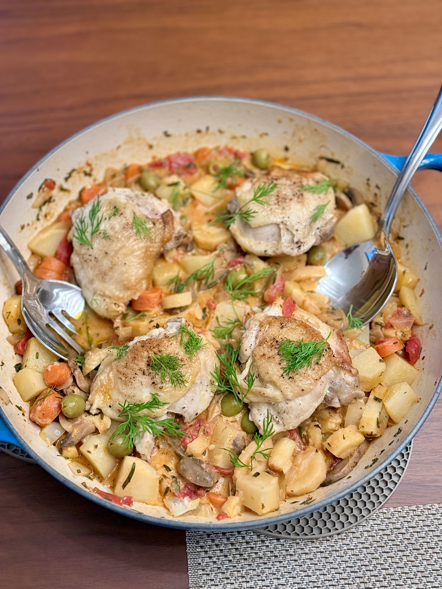

Every home cook has a soft spot for 1980s dinner party staples, and classic Chicken Marbella—with its briny olives, prunes, and sticky-sweet vinegar reduction—is near the top of our list. But on a chilly evening, when you want a hearty one-pot meal that feeds the soul rather than a formal dining room table, recipes have a way of taking on a life of their own.
What started as a quiet nod to Marbella's olive-studded profile evolved into something entirely our own. We traded the prunes and brown sugar for sweet, earthy autumn root vegetables—carrots, parsnips, and gold potatoes. The vinegar glaze gave way to a rich tomato and herb base, rounded out with a velvety swirl of tempered sour cream, cream cheese, and fresh dill.
That is the beauty of home cooking: formulas adapt to what is in the pantry, what the season demands, and what feels right when the sun goes down.

The Geometry of a Great Braise
If there is a workhorse in our kitchen for cool-weather meals, it is the Le Creuset round braiser. The wide, shallow base gives bone-in, skin-on chicken thighs the room they need to sear properly without crowding. When you lay them skin-side down in hot olive oil, the pan holds its heat steadily, transforming the skin into a crisp, golden armor before the pot ever sees a drop of liquid.
Once the chicken steps aside, the pan takes care of the vegetables. Sautéing the diced onion, carrots, parsnips, and potatoes first builds a foundation of caramelized flavor. Introducing the canned mushrooms, garlic, olives, and a full can of diced tomatoes creates an immediate, fragrant deglazing process right in the pan.
And because we keep the liquid level modest—just a half-cup of warm vegetable stock alongside the tomato juices—the root vegetables simmer in deep, concentrated flavor while the chicken thighs rest securely on top, keeping their crisp skin high and dry above the broth line.
Rhythm and Mise en Place
Cooking this dish taught us a quiet lesson in weeknight workflow. To keep things entirely stress-free, the secret is in the prep. Cleaning and chopping the root vegetables ahead of time—tucked away in a baggie in the fridge—makes the initial assembly effortless.
Before turning on the burner, lining everything up on the counter in order of assembly transforms dinner prep from a scramble into a calm, rhythmic sequence. From the seared chicken plate down to the finishing herbs and tempered dairy, having your components ready means you can pay attention to the heat management.
When the heavy cast-iron lid goes on and the burner drops immediately to low for its twenty-minute simmer, the pot takes over.
The Finishing Touch: Tempering the Sauce
One of the most rewarding details of this recipe happens off the heat. Stirring cold dairy straight into a hot, acidic tomato braise is a fast track to a split, grainy sauce.
Taking a moment to whisk softened cream cheese and dairy-free sour cream together, then tempering them with a few spoonfuls of hot braising liquid, guarantees a silky, stable emulsion. Folded in with a handful of fresh dill and topped with delicate whole fronds, the sauce turns velvety and rich without overpowering the sweet vegetables underneath.
As for seasoning? Salt is a personal journey. Our baseline measurement leans clean and balanced, leaving room for everyone at the table to adjust with a pinch of flaky salt if their palate calls for it—just like Rick did at our table.
It is comforting to know that recipes do not have to arrive fully formed from a cookbook. Sometimes they evolve right on your own stovetop, one substitution and one happy accident at a time.
Ready to bring this to your table?
Get the exact recipe and step-by-step instructions for our Rustic Harvest Chicken Braise →